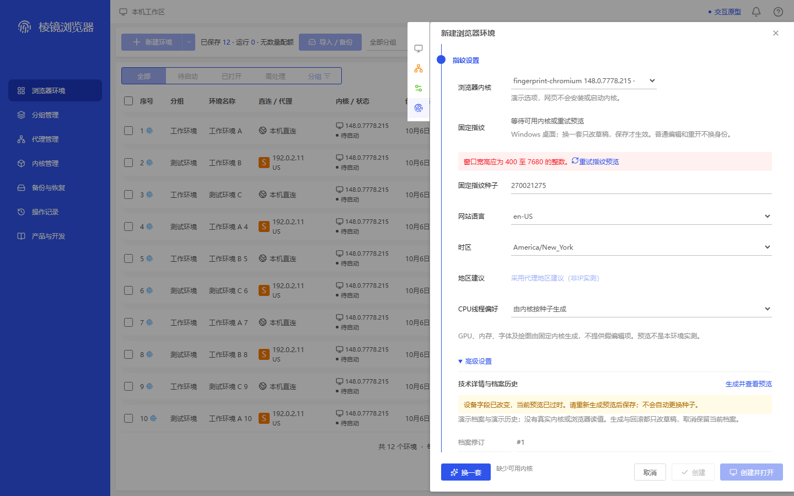
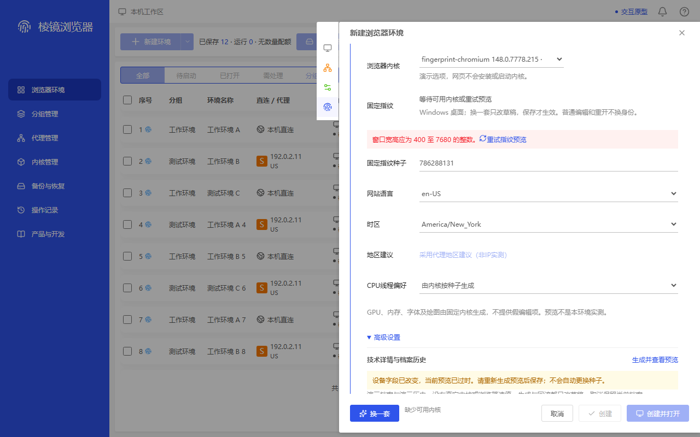

env-frontier-f11-demo-stale-failure-retry · 1440×900
ADAPTED — Original right-docked container, rail, dim mask, header and separate footer map to actual; title, fields and action semantics intentionally differ.,Red validation band and real retry control plus yellow stale warning fit natural body; no footer overlap or horizontal text cutoff.,Full saved profile-facts projection is not proof all technical rows appear in PNG.,Generic blocked-footer kernel copy is not proof a real kernel was verified or core identity changed.,ADAPTED is a scoped container/readability relation; original normal reference has no direct F11 failure/retry comparator.
映射原容器 environment-create-fingerprint；不代表已找到同名业务原状态。

8935018825a0e9fba5a38551b0aec7ddd6dce748d7043d93da7186c09ebe68c0
env-frontier-f11-demo-stale-failure-retry · 1280×800
ADAPTED — Same mapped normal fingerprint container and intact fixed footer; section heading is above scrolled body.,Both required failure/retry and stale texts fit real body after one actual +38px wheel, not a layout/timing rewrite.,Technical heading and expanded disclosure are visible; caveat is partially clipped and technical rows are offscreen. No all-details-visible or no-clipping claim.,Original normal reference also clips lower scroll content, but provides no direct comparator for this new failure state/caveat.,Seed differs naturally across contexts; identity comparison is within each context only.
映射原容器 environment-create-fingerprint；不代表已找到同名业务原状态。

8fd811524365d649d278cfe9a83c6ed2edc822048a55cb5f5309d9ed8120f9db